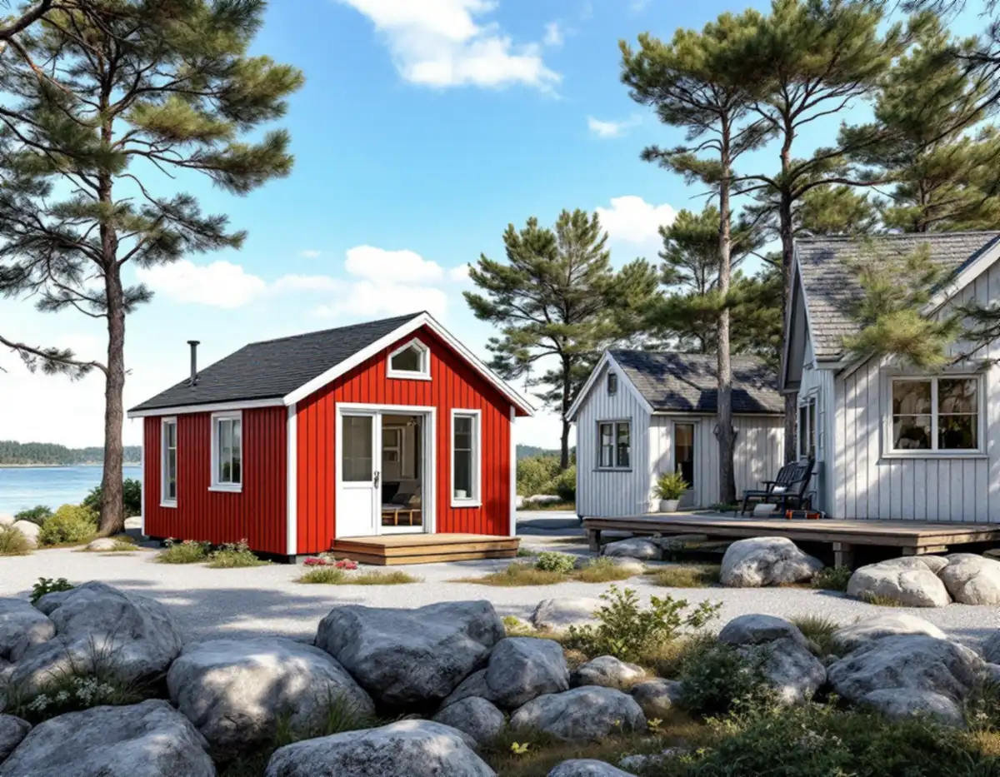
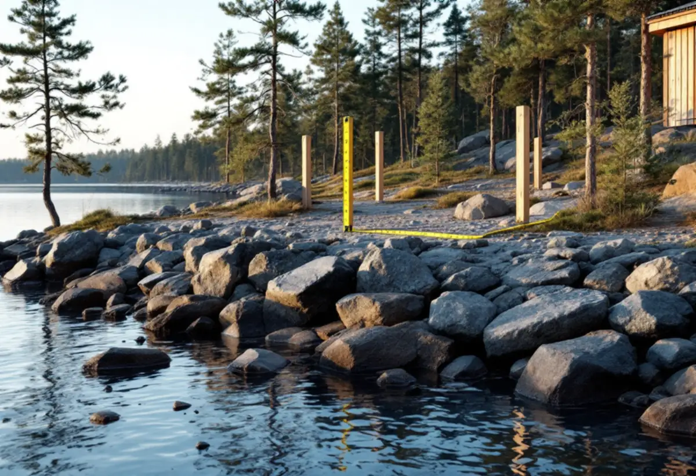

Platsbesök
Vi mäter huvudbyggnaden, befintliga bodar och avståndet till vatten och gräns.
Norrtälje har fler fritidshus än någon annan kommun, och många tomter i Roslagen har plats för ett litet hus till. Geal Entreprenad AB bygger komplementbostadshus nyckelfärdigt och börjar med frågorna som brukar avgöra här: hur stort huset får bli, var stranden går och vad som händer med avloppet.

SCB räknade 27 352 fritidshus i Norrtälje kommun 2025, flest i landet. Ett komplementbostadshus ska enligt plan- och bygglagen komplettera ett en- eller tvåbostadshus, och dess byggnadsarea ska vara mindre än byggnadsarean för det hus det kompletterar. Ett tänkt exempel: är bostadshuset på tomten en sommarstuga med 35 kvadratmeter byggnadsarea måste det nya huset vara mindre än 35 kvadratmeter för att vara lovfritt, oavsett vad gränserna i övrigt tillåter.
Ligger tomten utanför detaljplan får huset ha högst 50,0 kvadratmeter byggnadsarea och 4,5 meter till nocken. Alla lovfria komplementbyggnader och komplementbostadshus på tomten får då tillsammans vara 65,0 kvadratmeter, och den gamla friggeboden eller vedboden räknas in. Inom detaljplan gäller 30,0 kvadratmeter, 4,0 meter och 45,0 kvadratmeter.

Region Stockholms sammanställning visar flera riksintressen för kulturmiljövården i kommunen: Norrtälje stad som småstadsmiljö (AB 84), industrimiljön i Hallstavik (AB 96), gruv- och brukssamhället Herräng (AB 97), Grisslehamn (AB 98), Skebobruk och Edsbro (AB 93) och skärgårdsmiljön på Arholma (AB 619). Norrtälje stad nämns bland de riksintressen i länet som löper stor risk för påverkan vid förändring.
Plan- och bygglagen kräver bygglov för nybyggnad i ett särskilt värdefullt bebyggelseområde och där en detaljplan eller områdesbestämmelser skyddar särskilda värden (9 kap. 37 §). Ett riksintresse är inte automatiskt ett sådant område, men ligger tomten i ett av områdena ovan tar vi reda på hur kommunen bedömer platsen innan vi ritar, i stället för att utgå från att huset är lovfritt.
Strandskyddet omfattar enligt miljöbalken land och vatten intill 100 meter från strandlinjen, och länsstyrelsen kan i det enskilda fallet utvidga området till högst 300 meter. Inom området får inga nya byggnader uppföras, och inte heller grävas eller förberedas för dem. Ett attefallshus som är lovfritt enligt plan- och bygglagen kräver alltså i regel ändå dispens om det hamnar inom strandskyddet. Länsstyrelsen skriver att vissa kompletterande åtgärder till en huvudbyggnad inte behöver dispens, men enligt 7 kap. 17 § gäller det bara inom 15 meter från huvudbyggnaden, inte närmare strandlinjen än 25 meter och inom en tomtplats som angetts i ett dispensbeslut.
Kommunen beslutar i de flesta fall om dispens, och det krävs särskilda skäl. Två sådana är att området redan har tagits i anspråk så att det saknar betydelse för strandskyddet, eller att det är väl avskilt från stranden av en väg eller bebyggelse. I beslutet ska det stå hur mycket mark som får användas som tomt. Sedan den 1 juli 2025 gäller strandskyddet inte vid små sjöar på högst en hektar och vattendrag på högst två meters bredd, och Länsstyrelsen påpekar att kartskiktet fortfarande kan visa strandskydd vid sådana vatten. Därför kan vattnet behöva mätas på plats. Om pentry, altan och snickeri i stugan finns mer under snickare i Norrtälje.
Förordningen om miljöfarlig verksamhet och hälsoskydd skiljer på avlopp med och utan toalett. Det krävs tillstånd för att inrätta en avloppsanordning som en vattentoalett ska anslutas till, och för att ansluta en vattentoalett till en befintlig anordning. Ett avlopp utan toalett, till exempel för dusch och disk, anmäls i stället till den kommunala nämnden, om inte kommunen har föreskrivit tillstånd för delar av kommunen, och en ändring som väsentligt påverkar avloppsvattnets mängd eller sammansättning ska också anmälas.
Har fastigheten kommunalt vatten och avlopp ska du snarast meddela Norrtälje Vatten och Avfall om antalet bostadslägenheter ändras, genom en servisanmälan. Är fastigheten ansluten via en VA-samfällighet anmäls förändringen i stället till samfälligheten. Installationerna anmäls även till byggnadsnämnden innan de görs. Alla mått och paragrafer finns samlade i nya regler för attefallshus.
Vi mäter huvudbyggnaden, befintliga bodar och avståndet till vatten och gräns.
Vi räknar ut hur stort det nya huset får bli.
Strandskydd, kulturmiljö och avlopp reds ut före ritningarna.
Dispens, avloppstillstånd och anmälan med ritningar.
Grund, stomme och installationer till inflyttningsklart hus.
Vi går igenom huset och handlingarna med dig.
Det är lätt att tro att ett hus på den egna tomten räknas som en förbättring av fastigheten, men Skatteverket säger något annat. Att bygga ett helt nytt hus, en friggebod, ett garage, ett växthus eller en liknande fristående byggnad ger inget rotavdrag på ett småhus. Attefallshuset är nybyggnad, och därför redovisar vi priset utan avdrag.
Storleken, grundläggningen på berg eller mark, vilken avloppslösning som krävs, om det finns vatten indraget i dag och hur långt det är till tomten för material och personal. Efter ett kostnadsfritt platsbesök får du ett skriftligt kostnadsförslag.
Komplementbostadshus på tomten.
Attefallshus →Takbyte, takbesiktning och plåtarbeten.
Takläggare i Norrtälje →Roslagen, skärgård och fritidshus.
Takrenovering i Norrtälje →Fritidshus, WC-tillstånd och brunn.
Badrumsrenovering i Norrtälje →Nytt hus, förhandsbesked och egen brunn.
Byggföretag i Norrtälje →Ljust bostadshus och röda uthus.
Fasadmålning i Norrtälje →Bruksvillor, sommarvillor och Roslagens trähus.
Fasadrenovering i Norrtälje →Roslagens hus, bruksorter och bidrag i Norrtälje.
Fönsterbyte i Norrtälje →Gårdar, timmerhus och lösa innerbågar i Roslagen.
Fönsterrenovering i Norrtälje →Plankgolv i gamla gårdar och parstugor.
Golvläggare i Norrtälje →Från slipat eller lackat golv till skurgolv.
Golvslipning i Norrtälje →Gasolspis, vedspis och pentry i gäststugan.
Köksrenovering i Norrtälje →Trähus, fritidshus och kustlägen i Norrtälje.
Målare i Norrtälje →Takskydd, rännor och skorstensplåt i Norrtälje.
Plåtslagare i Norrtälje →Fritidshus, altan och gäststuga.
Snickare i Norrtälje →Kust, snö och Roslagens tak.
Takbyte i Norrtälje →Ny tapet i fritidshus och villor.
Tapetsering i Norrtälje →Tidigare tillbyggnader, strand och frivilligt lov.
Tillbyggnad i Norrtälje →Egen brunn och eget avlopp.
Totalrenovering i Norrtälje →